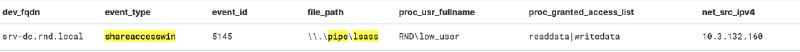
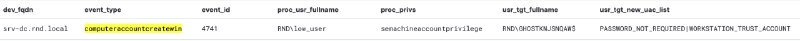
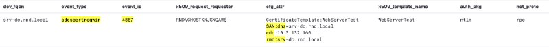

Certighost (CVE-2026-54121)
Certighost (CVE-2026-54121) — уязвимость в механизме chase, используемом AD CS при разрешении объектов Active Directory, позволяющая непривилегированному доменному пользователю получить сертификат учетной записи контроллера домена.
При выпуске сертификата служба AD CS запрашивает у контроллера домена необходимые атрибуты с целью определить, для какого объекта Active Directory выпускается сертификат. Для случаев если объект находится в другом домене, механизм chase позволяет службе сертификации выполнить запрос на указанный в запросе клиента контроллер домена.
В запросе определяются два атрибута:
cdc (Client DC) — указывает, к какому контроллеру домена необходимо обратиться.rmd (Remote Domain) — определяет, какой объект необходимо определить.Используя эти параметры, служба сертификации выполняет следующие действия:
Уязвимость заключается в том, что AD CS не проверяет, что узел, указанный в параметре cdc, действительно является контроллером домена и полностью доверяет полученным от него LDAP-атрибутам. После успешной аутентификации по указанному адресу cdc поддельный сервер передает атрибуты целевого контроллера домена (objectSid, dNSHostName). В результате AD CS выпускает сертификат для учетной записи контроллера домена.
Используя этот сертификат для аутентификации PKINIT, злоумышленник получает TGT контроллера домена, что позволяет выполнить DCSync и приводит к полной компрометации домена Active Directory.
Разберем каждый шаг эксплуатации уязвимости на детекты.
python3 certighost.py -d rnd.local -u low_user -p 'P@ssw0rd' --dc-ip 10.3.132.158 --template 'WebServerTest'
Цепочка детектов
1. Взаимодействие с чувствительным именованным каталогом lsass через административный общий сетевой ресурс IPC$

2. Создание машинной учетной записи непривилегированным аккаунтом

В рамках эксплуатации уязвимости можно как создать учетную машинную запись, так и использовать существующую, при условии наличия учетных данных.
В исходном коде POC новая машинная учетная запись состоит из GHOST и 8 символов UPPERCASE ASCII символов.
Можем составить следующее правило на стандартное использование эксплойта.
dev_os_type:windows AND
event_type:(computeraccountcreate OR computeraccountcreatewin)
AND usr_tgt_name.keyword:/GHOST[A-Z]{8}\$/3. От имени созданной машинной учетной записи запрашиваем сертификат для аутентификации, содержащий параметры механизма chase и альтернативное имя учетной записи контроллера домена(SAN:dns=)

Обратите внимание на параметры запроса, где:SAN:dns=srv-dc.rnd.local — альтернативное имя, указывающее на целевой контроллер домена, отличное от имени учетной записи, запрашивающей сертификат.cdc:10.3.132.160 — IP-адрес поддельного сервера злоумышленника, на который происходит аутентификация в рамках эксплуатации rmd:srv-dc.rnd.local — имя целевого контроллера домена
Комбинация всех трех параметров при запросе сертификата является редкой, а в случае если в параметре cdc: указан поддельный IP-адрес, то и вовсе явным признаком эксплуатации уязвимости.
Находим такие запросы:
dev_os_type:windows AND
event_type:(ADCSCertReq OR ADCSCertReqWin) AND
cfg_attr:("SAN:dns" AND cdc\:* AND rmd\:*) AND
x509_request_requester.keyword:/.+\$/
Также мы можем дополнительно выявлять запросы сертификата по протоколу RPC с использованием аутентификации NTLM, что может свидетельствовать об использовании хакерских инструментов (таких как Certipy, Impacket) c Linux-хоста.
dev_os_type:"windows" AND event_type:"adcscertreqwin" AND auth_pkg:"ntlm" AND net_proto:"rpc" AND op_status:"received"
И последнее, на что стоит обратить внимание при анализе события запроса сертификата — это отличие имени учетной записи в x509_request_requester и x509_san, что является свидетельством эксплуатации мисконфигураций ESC или уязвимостей AD CS.
4. Запрос TGT с использованием сертификата учетной записи контроллера домена с IP-адреса атакующего
Это событие свидетельствует о получении TGT билета учетной записи контроллера домена злоумышленником и полной компрометации домена.
5. Использование техники UnPAC the hash для получения хеша учетной записи контроллера домена.
Приведенные примеры правил/хантов для аналитиков SOC могут выявить нелегитимную активность на каждом этапе цепочки эксплуатации мисконфигураций или уязвимостей AD CS, в частности Certighost.
Не забываем установить обновление безопасности. Удачи в поисках киберугроз!